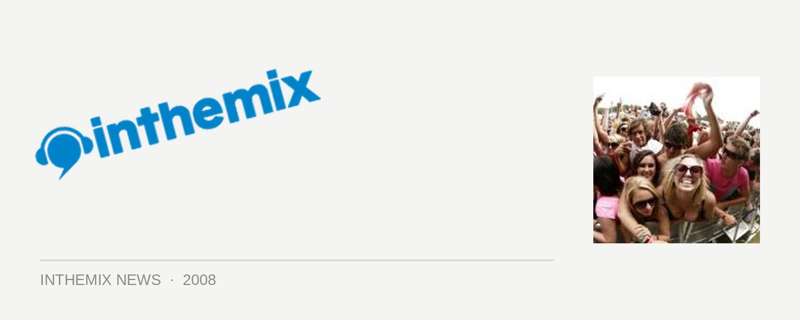

Sydney Good Vibrations photos hit ITM
It was the biggest party ever thrown by the Jam Music crew when the Good Vibrations tour made its way into Sydney over the weekend, with the capacity climbing its way towards becoming one of the largest music festivals the country has ever seen. The first photos from acclaimed club photographer Ashley Mar are now up on inthemix, check them out HERE. And if you were there, you’ll know there were some colourful characters spotted around the place; for a good example, check out this pearler of a shot..
In spite of some serious issues relating to overcrowding when thousands descended upon the Roots Tent in the hope of catching a glimpse of the beloved Cypress Hill, in a space that was woefully under equipped for the amount of punters trying to squeeze in there, the 2008 installment of Good Vibrations still managed to deliver a solid dose of summer festival fun. The weather held out for a day of blue skies and light breezes and musically, the event boasted arguably the best lineup the festival has ever seen in its five-year history. Rocking live performances were heard from Thievery Corporation, The Rapture and Calvin Harris while hip hop fans were kept happy all day with the talents of Pharaoh Monch, K-Os and Pigeon John.
And with the fine selection of DJs blasting out tunes on the other side of the sprawling Centennial Park grounds, things couldn’t have gotten any better for lovers of electronic music. The crowds were considerably more manageable and Beat Vandals, Radioclit and 16 Bit Lolitas got things moving in the earlier stages of the day while later in the evening, the festivities were capped off by Sinden, Tittsworth and James Zabiela, the latter who was coming off the back of a knockout club performance the night before. Those with enough energy to kick onto the Chinese Laundry afterwards were treated to encore performances from many of the DJs.
While Kanye West is a man who seems to divide people into camps of either lovers or haters, he’s the flashiest and most ‘of-the-moment’ headliner that the Good Vibrations Festival has ever hosted, and from all reports his performance lived up to the hype generated by his Melbourne appearance last Saturday (as well as his brief interlude during the week with Daft Punk at the Grammy Awards).
For more ITM coverage of the national Good Vibrations tour, check out our Full Coverage page and stay tuned to ITM for the photos of the Perth leg of the tour.